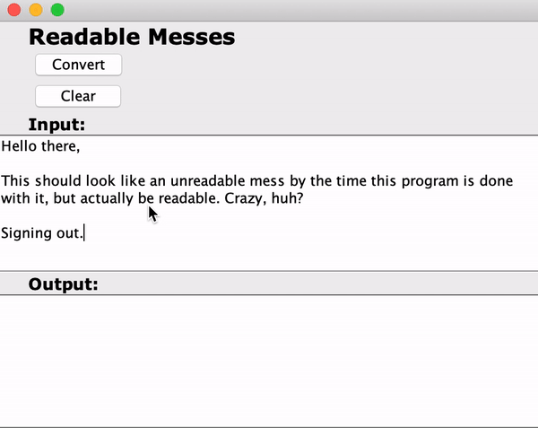

[Solo] Readable Messes

Above, you can see text depicting fundamental truths of the world.
Using Java and the Swing toolkit, I made a fun program that randomly jumbles up the letters of words, leaving only the first and last letters in their original positions. According to this and some word-of-mouth facts that I had stumbled upon in the past, apparently people can read scrambled words with just the first and last letters correctly placed pretty well, given a good amount of contextual clues. Crazy, huh?